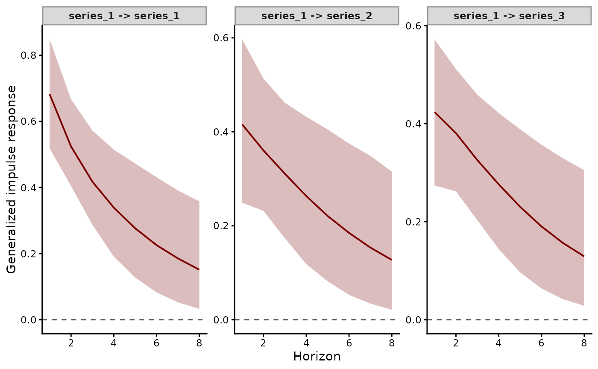

Compute Generalized or Orthogonalized Impulse Response Functions (IRFs) from
mvgam models with Vector Autoregressive dynamics. An impulse
response traces how the latent trend of every series moves over h
time steps after a one-standard-deviation innovation to one series.
The default generalised responses suit most analyses. Orthogonalised
responses need a causal ordering of the series.
Usage
irf(object, ...)
# S3 method for class 'mvgam'
irf(
object,
h = 10,
cumulative = FALSE,
orthogonal = FALSE,
ndraws = NULL,
draw_ids = NULL,
summary = TRUE,
probs = c(0.025, 0.975),
future = FALSE,
...
)Arguments
- object
An object of class
mvgamfitted with aVAR()latent process model- ...
Unused. Anything passed here is refused.
- h
Positive integer. The number of horizons to compute. Horizon 1 is the time step of the shock.
- cumulative
Logical.
TRUEaccumulates each response over the horizons.- orthogonal
Logical.
TRUEcomputes orthogonalised responses from the lower Cholesky factor of the innovation covariance. These depend on the order of the levels of the series factor. The default generalised responses do not (Pesaran and Shin 1998).- ndraws
Positive integer specifying number of posterior draws to use. NULL (default) uses all available draws.
- draw_ids
Optional integer vector selecting a subset of posterior draw indices to use. NULL (default) uses all draws (subject to
ndraws).- summary
Logical; return the posterior median and interval of each response (the default), or the per-draw responses themselves. The draws are one
KbyKmatrix per horizon per draw, which on a wide panel runs to hundreds of megabytes.- probs
The lower and upper percentiles of the interval reported with the median when
summary = TRUE.- future
Logical. WhenTRUE, the per-draw computation runs under thefuture::plan()the caller has set. The defaultsequentialplan runs as baselapply()does.plan(multisession, workers = N)splits the draws acrossNR processes. Without the future package the draws run in turn, with a message.
Value
An object of mvgam_irf-class. plot.mvgam_irf()
and summary.mvgam_irf() take it.
Details
See mvgam_irf-class for the quantities computed and
returned, with references.
References
Lutkepohl H (2005). New Introduction to Multiple Time Series Analysis. Springer, Berlin. doi:10.1007/978-3-540-27752-1
Pesaran HH and Shin Y (1998). Generalized impulse response analysis in linear multivariate models. Economics Letters 58, 17-29. doi:10.1016/S0165-1765(97)00214-0
See also
fevd() and stability() summarise the same VAR dynamics.
The VAR article runs irf() on a
plankton community. The
hierarchical VAR article
runs it on each group of a hierarchical VAR.
Other latent dynamics:
active_factors(),
compare_loadings(),
fevd.mvgam(),
ordinate(),
posterior_transition_matrix(),
residual_cor(),
shared_variation(),
stability.mvgam()
Examples
# \dontrun{
set.seed(0)
simdat <- sim_mvgam(family = gaussian(), n_series = 3L,
n_timepoints = 120L, trend_model = VAR(),
prop_trend = 0.95)
var_mod <- mvgam(y ~ 1, trend_formula = ~ VAR(p = 1),
data = simdat$data_train, family = gaussian(),
chains = 2, silent = 2)
#> Warning: 44 of 2000 (2.0%) transitions ended with a divergence.
#> See https://mc-stan.org/misc/warnings for details.
#> Warning: 1 of 2 chains had an E-BFMI less than 0.3.
#> See https://mc-stan.org/misc/warnings for details.
# Generalised responses of every series to a shock in each
irf_obj <- irf(var_mod, h = 8L)
plot(irf_obj, series = 1)

# Next: fevd() splits each series' forecast variance among the
# shocks. stability() summarises how the system returns to
# equilibrium
# }